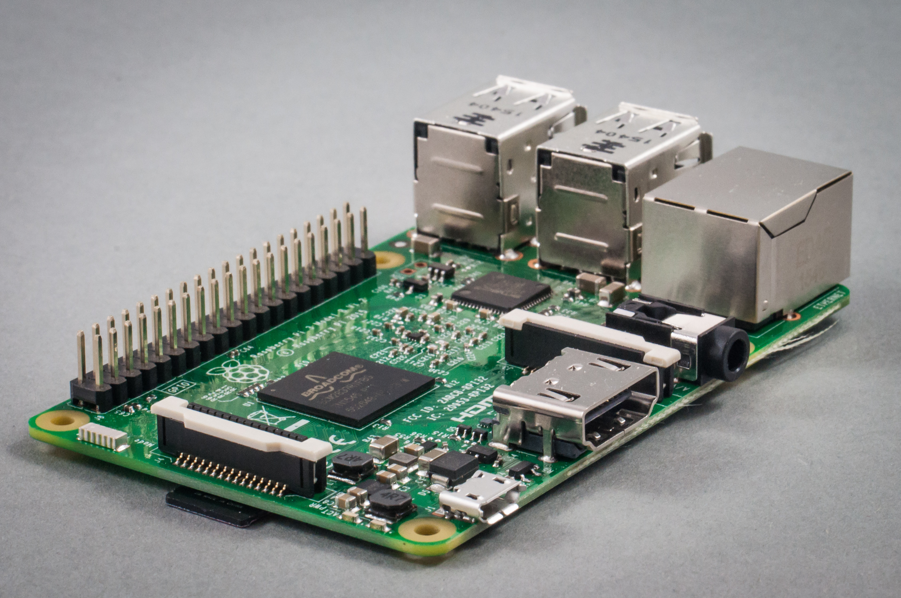

Document Overview
This document describes the steps to develop an embedded Linux-based system using the Raspberry PI board. The document has been specifically written to use a Raspberry PI development system based on the BCM2837 processor. All the software elements used have a GPL license.
[Time to complete the tutorial]: The time necessary to complete all the tutorial steps is approximately 8 hours. |
|
|---|---|
Read all the instructions carefully before executing the practical part; otherwise, you will find errors and probably unpredicted errors. In parallel, you need to review the slides available at the Moodle site or at [RD1]
Acronyms
CPU |
Central Processing Unit |
|---|---|
EABI |
Extended Application Binary Interface |
EHCI |
Enhanced Host Controller Interface |
I/O |
Input and Output |
MMC |
Multimedia card |
NAND |
Flash memory type for fast sequential read and write |
PCI |
Peripheral Component Interconnect – computer bus standard |
PCI Express |
Peripheral Component Interconnect Express |
OS |
Operating system |
UART |
Universal Asynchronous Receiver Transmitter |
USB |
Universal Serial Bus |
REFERENCED DOCUMENTS
References
Embedded Linux system development.
Slides at https://moodle.upm.es/titulaciones/oficiales/course/view.php?id=<yourcourse>
Mastering Embedded Linux Programming - Second Edition. Packt. https://www.packtpub.com/product/mastering-embedded-linux-programming-second-edition/9781787283282
Raspberry-Pi User Guide. Reference Manual.
www.myraspberry-pi.org/wp-content/…/Raspberry.Pi_.User_.Guide_.pdf